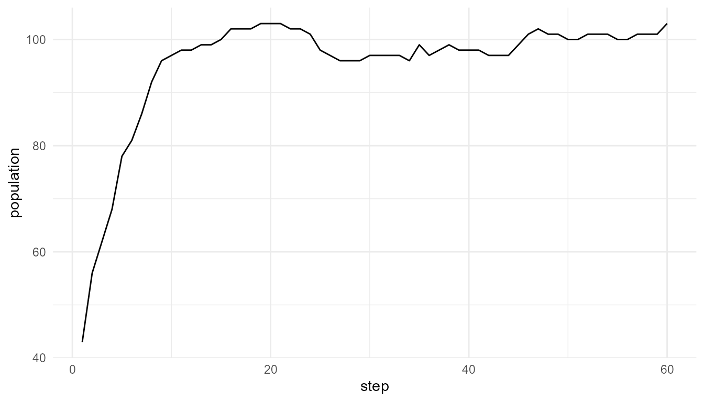

Comparing Artificial-Life Models Tutorial
Source:vignettes/comparing-alife-models-tutorial.Rmd
comparing-alife-models-tutorial.RmdPurpose
This tutorial compares several artificial-life models included in
artificialLifeR. The goal is to understand how agents,
resources, reproduction, mutation, selection, and population dynamics
each contribute to life-like behavior.
Run several models
agents <- create_agents(n_agents = 50, seed = 1)
competition <- simulate_resource_competition(n_agents = 50, steps = 40, seed = 2)
population <- simulate_population_dynamics(initial_population = 40, steps = 60, seed = 3)
selected <- simulate_selection(agents, survival_fraction = 0.50, seed = 4)Inspect outputs
head(agents)
#> agent x y energy speed efficiency
#> 1 1 0.2655087 0.47761962 1.0597159 0.03759267 0.5450187
#> 2 2 0.3721239 0.86120948 0.9081960 0.05084232 0.4981440
#> 3 3 0.5728534 0.43809711 1.0511680 0.03178157 0.4681932
#> 4 4 0.9082078 0.24479728 0.8305955 0.05316058 0.4070638
#> 5 5 0.2016819 0.07067905 1.2149536 0.03690831 0.3512540
#> 6 6 0.8983897 0.09946616 1.2970600 0.08534575 0.3924808
#> reproduction_threshold age alive
#> 1 1.540940 0 TRUE
#> 2 1.668887 0 TRUE
#> 3 1.658659 0 TRUE
#> 4 1.466909 0 TRUE
#> 5 1.271476 0 TRUE
#> 6 1.749766 0 TRUE
head(competition$summary)
#> step n_alive mean_energy mean_resource total_resource
#> 1 1 50 0.9920413 0.7355619 22.06686
#> 2 2 50 1.0104519 0.7045157 21.13547
#> 3 3 50 1.0265316 0.6795264 20.38579
#> 4 4 50 1.0365931 0.6723698 20.17109
#> 5 5 50 1.0469975 0.6577956 19.73387
#> 6 6 50 1.0557799 0.6461239 19.38372
head(population$summary)
#> step population mean_energy mean_efficiency trait_sd
#> 1 1 43 1.147430 0.4953384 0.1185816
#> 2 2 56 1.046536 0.5186439 0.1208978
#> 3 3 62 1.094271 0.5189123 0.1176532
#> 4 4 68 1.117338 0.5186126 0.1187843
#> 5 5 78 1.071779 0.5288703 0.1248649
#> 6 6 81 1.101884 0.5333708 0.1248362
head(selected)
#> agent x y energy speed efficiency
#> 43 43 0.7829328 0.64228826 1.174060 0.01670055 0.4268252
#> 21 21 0.9347052 0.33907294 1.071326 0.03988085 0.7307978
#> 29 29 0.8696908 0.77732070 1.011151 0.03636679 0.6027392
#> 33 33 0.4935413 0.39999437 1.176713 0.06062992 0.5219925
#> 40 40 0.4112744 0.14330438 1.040065 0.04886206 0.4073891
#> 42 42 0.6470602 0.05893438 1.181180 0.07353167 0.5402012
#> reproduction_threshold age alive fitness
#> 43 1.522348 0 TRUE 0.5011185
#> 21 1.326678 0 TRUE 0.7829230
#> 29 1.519719 0 TRUE 0.6094605
#> 33 1.435952 0 TRUE 0.6142354
#> 40 1.499466 0 TRUE 0.4237110
#> 42 1.603411 0 TRUE 0.6380749Compare model roles
| Model | Unit | Main process | Output pattern |
|---|---|---|---|
| Agents | Individual agent | Trait initialization | Population variation |
| Resource competition | Agent and environment | Energy gain and cost | Survival and energy change |
| Selection | Agent population | Fitness-based persistence | Changed population composition |
| Population dynamics | Population through time | Birth, death, mutation, capacity | Population growth or decline |
Compare summaries
rbind(
initial_efficiency = measure_life_like_complexity(agents, trait_col = "efficiency"),
selected_efficiency = measure_life_like_complexity(selected, trait_col = "efficiency"),
competition_energy = measure_life_like_complexity(competition$agents, trait_col = "energy", time_col = "step"),
population_efficiency = measure_life_like_complexity(population$agents, trait_col = "efficiency", time_col = "step")
)
#> n unique_values entropy mean sd
#> initial_efficiency 50 50 3.145659 0.5076869 0.1008672
#> selected_efficiency 25 25 3.063465 0.5105145 0.1037437
#> competition_energy 2000 1999 2.900350 1.1301868 0.5258798
#> population_efficiency 5731 46 2.881358 0.5864819 0.1215391
#> temporal_variability mean_abs_change
#> initial_efficiency NA NA
#> selected_efficiency NA NA
#> competition_energy 0.06078271 0.005784354
#> population_efficiency 0.04399075 0.002700233Compare population scenarios
low_mutation <- simulate_population_dynamics(
initial_population = 40,
steps = 60,
mutation_rate = 0.01,
seed = 5
)
high_mutation <- simulate_population_dynamics(
initial_population = 40,
steps = 60,
mutation_rate = 0.30,
seed = 5
)
data.frame(
scenario = c("low mutation", "high mutation"),
final_population = c(tail(low_mutation$summary$population, 1), tail(high_mutation$summary$population, 1)),
final_trait_sd = c(tail(low_mutation$summary$trait_sd, 1), tail(high_mutation$summary$trait_sd, 1))
)
#> scenario final_population final_trait_sd
#> 1 low mutation 100 0.07268323
#> 2 high mutation 99 0.07432279Visualize population comparison
plot_alife_sim(
population$summary,
x = "step",
y = "population",
type = "line"
)
Interpretation
The models represent different parts of artificial life. Agent creation gives variation. Resource competition gives environmental constraint. Reproduction gives inheritance. Mutation gives novelty. Selection changes population composition. Population dynamics show how individual-level rules accumulate over time.
A strong interpretation compares mechanisms, not only numbers.
Choosing the right model
| Question | Useful function |
|---|---|
| What variation exists in the initial population? | create_agents() |
| How do resources affect survival? | simulate_resource_competition() |
| How do offspring inherit traits? | simulate_reproduction() |
| How does variation enter a population? | simulate_mutation() |
| How does fitness affect persistence? | simulate_selection() |
| How does population size change over time? | simulate_population_dynamics() |